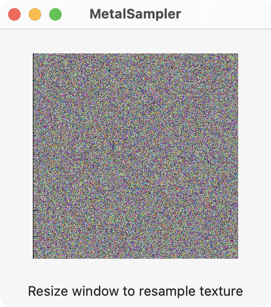
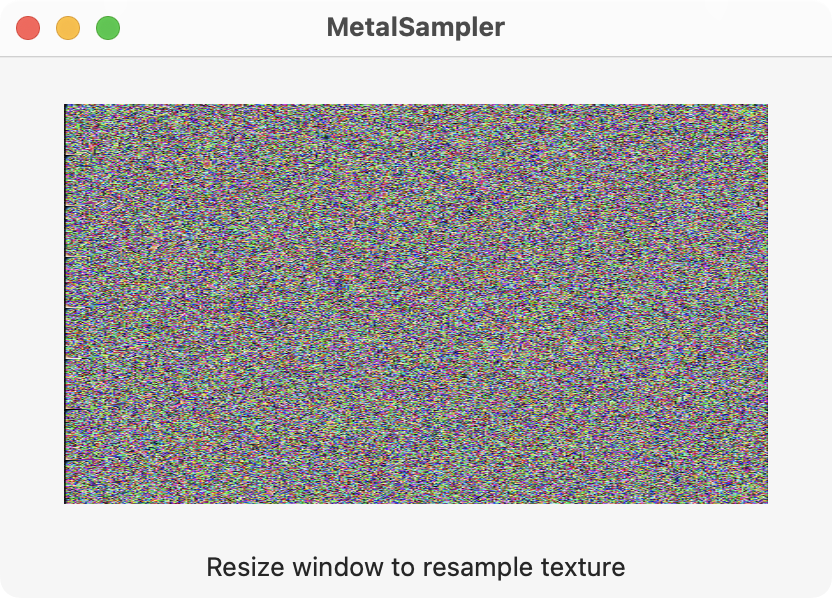
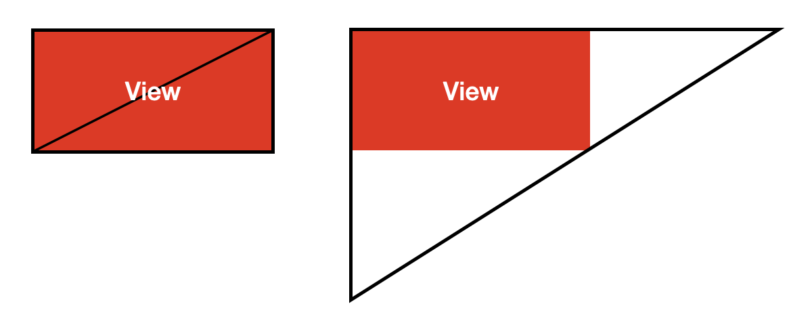

This example uses a Metal sampler to upscale a noise texture as the Metal view increases in size. The left image shown below represents the actual size of the texture. The right image is the sampled (upscaled) texture due to the larger window size which increases the size of the Metal view.


Code for the main SwiftUI view is shown below which contains the MetalView where the noise texture is drawn.
// ContentView.swift
import SwiftUI
import MetalKit
struct ContentView: View {
@State private var mtkView = MTKView()
@State private var renderer: Renderer?
var body: some View {
VStack {
MetalView(mtkView: mtkView).onAppear {
renderer = Renderer(metalView: mtkView)
}
.frame(minWidth: 200, minHeight: 200)
.padding()
Text("Resize window to resample texture")
}
.padding()
}
}
The MetalView represents a MTKView as shown below. Notice the MTKView must be wrapped with a NSViewRepresentable for SwiftUI in macOS.
// MetalView.swift
import SwiftUI
import MetalKit
struct MetalView: NSViewRepresentable {
let mtkView: MTKView
func makeNSView(context: Context) -> some NSView {
return mtkView
}
func updateNSView(_ nsView: NSViewType, context: Context) { }
}
The Renderer object sets up the Metal device, pipelines, and texture for drawing to the view. Thank you to Warren Moore who helped with the render pipeline.
// Renderer.swift
import MetalKit
class Renderer: NSObject, MTKViewDelegate {
static var device: MTLDevice!
static var commandQueue: MTLCommandQueue!
var computePipeline: MTLComputePipelineState!
var renderPipeline: MTLRenderPipelineState!
var texture: MTLTexture!
init(metalView: MTKView) {
super.init()
// Setup the GPU and command queue
guard let device = MTLCreateSystemDefaultDevice(),
let commandQueue = device.makeCommandQueue()
else {
fatalError("GPU not available")
}
Renderer.device = device
Renderer.commandQueue = commandQueue
// Setup compute pipeline and the draw_noise shader function
let library = device.makeDefaultLibrary()
let drawNoise = library?.makeFunction(name: "draw_noise")
do {
computePipeline = try device.makeComputePipelineState(function: drawNoise!)
} catch let error as NSError {
print(error)
}
// Setup render pipeline along with vertex and fragment shader functions
let vertexFunction = library?.makeFunction(name: "fullscreen_vertex")
let fragmentFunction = library?.makeFunction(name: "fullscreen_fragment")
let renderDescriptor = MTLRenderPipelineDescriptor()
renderDescriptor.vertexFunction = vertexFunction
renderDescriptor.fragmentFunction = fragmentFunction
renderDescriptor.colorAttachments[0].pixelFormat = metalView.colorPixelFormat
renderDescriptor.depthAttachmentPixelFormat = metalView.depthStencilPixelFormat
do {
renderPipeline = try device.makeRenderPipelineState(descriptor: renderDescriptor)
} catch {
fatalError("Could not create render pipeline state: \(error)")
}
// Setup the Metal view
metalView.device = device
metalView.clearColor = MTLClearColor(red: 1.0, green: 0.0, blue: 0.0, alpha: 1.0)
metalView.framebufferOnly = false
metalView.delegate = self
// Setup the texture
let textureDescriptor = MTLTextureDescriptor.texture2DDescriptor(
pixelFormat: metalView.colorPixelFormat,
width: 400,
height: 400,
mipmapped: false)
textureDescriptor.usage = [.shaderRead, .shaderWrite]
texture = device.makeTexture(descriptor: textureDescriptor)
}
func mtkView(_ view: MTKView, drawableSizeWillChange size: CGSize) { }
func draw(in view: MTKView) {
guard let drawable = view.currentDrawable else { return }
// Command buffer
let commandBuffer = Renderer.commandQueue.makeCommandBuffer()
// Compute encoder and threads
let computeEncoder = commandBuffer?.makeComputeCommandEncoder()
computeEncoder?.setComputePipelineState(computePipeline)
computeEncoder?.setTexture(texture, index: 0)
let w = computePipeline.threadExecutionWidth
let h = computePipeline.maxTotalThreadsPerThreadgroup / w
let threadsPerThreadGroup = MTLSize(width: w, height: h, depth: 1)
let threadsPerGrid = MTLSize(width: texture.width, height: texture.height, depth: 1)
computeEncoder?.dispatchThreads(threadsPerGrid, threadsPerThreadgroup: threadsPerThreadGroup)
computeEncoder?.endEncoding()
// Render encoder
let renderEncoder = commandBuffer?.makeRenderCommandEncoder(descriptor: view.currentRenderPassDescriptor!)
renderEncoder?.setRenderPipelineState(renderPipeline)
renderEncoder?.setFragmentTexture(texture, index: 0)
renderEncoder?.drawPrimitives(type: .triangle, vertexStart: 0, vertexCount: 3)
renderEncoder?.endEncoding()
// Commit the buffer
commandBuffer?.present(drawable)
commandBuffer?.commit()
}
}
The shader functions for this example are given below. Notice that instead of drawing two triangles to represent a quad, the fullscreen_vertex() shader function draws a single triangle that encloses the entire Metal view as shown in the figure below. The texture is only drawn to the visible area of the triangle. The fullscreen_fragment() function defines a linear sampler that is used to scale the texture as the Metal view's dimensions change. Another thank you to Warren Moore who provided the vertex and fragment sampler functions.

// Shaders.metal
#include <metal_stdlib>
using namespace metal;
struct VertexOut {
float4 position [[position]];
float2 texCoords;
};
// A vertex function that can be used to draw a single triangle that covers the entire screen
vertex VertexOut fullscreen_vertex(uint vertexID [[vertex_id]]) {
switch (vertexID) {
case 0:
return { .position = { -1.0, 1.0, 0.0, 1.0 }, .texCoords = { 0.0, 0.0 } };
case 1:
return { .position = { -1.0, -3.0, 0.0, 1.0 }, .texCoords = { 0.0, 2.0 } };
case 2: default:
return { .position = { 3.0, 1.0, 0.0, 1.0 }, .texCoords = { 2.0, 0.0 } };
}
}
// A linear sampler to upscale the texture
// See section 2.10 Samplers on page 41 in Metal Shading Language PDF for more info
fragment half4 fullscreen_fragment(VertexOut in [[stage_in]],
texture2d<half, access::sample> colorMap [[texture(0)]])
{
constexpr sampler linear_sampler(coord::normalized, filter::linear, mip_filter::linear, address::repeat);
half4 color = colorMap.sample(linear_sampler, in.texCoords);
return color;
}
// Generate noise using the golden ratio
// Based on Shadertoy example https://www.shadertoy.com/view/ltB3zD
float gold_noise(float2 xy, float seed) {
float phi = 1.61803398874989484820459;
float z = fract(tan(distance(xy * phi, xy) * seed) * xy.x);
return z;
}
// Draw the noise to the output texture
kernel void draw_noise(
uint2 id [[thread_position_in_grid]],
texture2d<half, access::write> output [[texture(0)]]
){
float r = gold_noise(float2(id.x, id.y), 0.1);
float g = gold_noise(float2(id.x, id.y), 0.2);
float b = gold_noise(float2(id.x, id.y), 0.3);
half3 c = half3(r, g, b);
half4 color = half4(c, 1.0);
output.write(color, id);
}
Gavin Wiggins © 2024